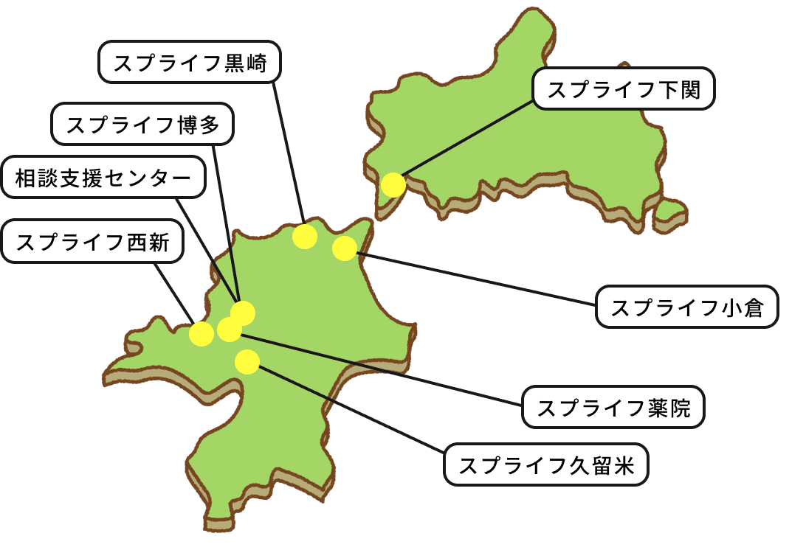
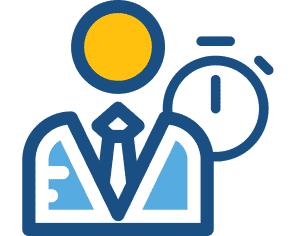

利用者が「仕事を続けることができる」ための支援を提供する
利用者が「仕事を続けることができる」ための支援を提供する
スプライフは福岡を拠点に、利用者が「仕事を続けることができる」ための支援を提供する就労移行支援事業所です。
『生きる、を充たす。』の想いのもと、スキル習得や就職活動、企業実習を通じて一人ひとりの可能性を引き出し、就労定着率88.1％という高い成果を実現しています。私たちはIPO達成を目指し、福祉の認知度を高める挑戦や新店オープン、事業拡大にも積極的。変化と成長を楽しみながら、利用者と社会をつなぐ懸け橋となる仲間を求めています。
スプライフについて
about usスプライフは、福岡・北九州・久留米・薬院といった都市圏に複数のアクセス拠点を構え、障がいのある方の「働きたい」を支える就労移行支援を展開しています。
PC・ビジネススキルの習得から、企業見学・面接対策・入社後定着支援まで
地域企業との連携を強化しながら“一気通貫”で支援することで
福岡エリアにおける就労の実現を加速しています。
通いやすい立地と実践的なプログラムにより、未経験からでも「働く力」を身につけ、地域社会の一員として活躍できる環境を整えています。

スプライフの特徴
Feature-
社員数・年齢構成
20代：17.5%
30代：50.9%
40代：22.8%
50代：7.0%
60代：なし
42名
-
男女比
28%

72%
-
勤続年数

4.5年
-
年間休日
127日
-
平均残業時間

月1.2時間
-
有給取得日数
年間平均11日
-
年間就職者数

81人
-
就業定着率
63%
-
平均就業率

93%
・利用者様情報
-
実施講座
- ビジネスマナー
- 面接対策
- PCスキル
- 動画編集
- ストレスマネジメント
- コミュニケーション
-
利用者様の年齢分布
10代：10%
20代：38%
30代：24%
40代：17%
50代：11%
-
主な就職支援先

- 一般事務
- サービス業
- 専門職
- 軽作業
- 清掃業
- 農林水産業
仕事内容
job就労支援員業務
障がいのある方の「働きたい」という想いを実現するためにサポートを行う

就労支援員として、障がいのある方の「働きたい」という想いを実現するためにサポートを行っていただきます。就職活動の支援やスキル指導、関係機関との連携を通じて、利用者様一人ひとりに合わせた支援を提供するやりがいの大きなお仕事です。無資格・未経験の方でも安心してスタートできるよう、OJTやフォロー体制を整えています。年間休日122日、残業も少なく、安心して長く働ける環境です。
主な業務内容
- 就職活動支援、面接指導
- PC（ワード・エクセル等）指導
- ビジネスマナー、コミュニケーション指導
- 支援計画の作成補助
- 行政や関連機関、企業との連携
- 相談受付・アドバイス
- 就労後の定着支援 など
平日のスケジュール例
- 09:00 出社・朝礼
- 10:00 訓練
- 12:00 休憩
- 13:00 面談実施
- 14:00 見学/面接同行
- 16:30 支援記録記入
- 17:30 夕礼・退社
サービス管理責任者
支援の質とチームを支える中核ポジション

サービス管理責任者として、就労移行支援・定着支援全体のマネジメントを担っていただきます。 利用者様一人ひとりに合わせた個別支援計画の作成・管理を行いながら、支援員と連携し、事業所全体の支援の質を高めていく役割です。 現場での支援経験を活かし、チームづくりや人材育成にも関わることができる、やりがいの大きなポジションです。
主な業務内容
- 個別支援計画の作成・モニタリング
- 利用者様・ご家族との面談、支援方針の調整
- 支援員への助言・指導、チームマネジメント
- 行政・関係機関・企業との連携
- サービス提供体制の整備、運営管理
- 支援会議・ケース検討会の実施 など
平日のスケジュール例
- 09:00 出社・朝礼
- 10:00 支援計画作成・モニタリング
- 12:00 休憩
- 13:00 利用者様・ご家族との面談
- 14:00 支援員とのケース共有・指導
- 16:30 書類作成・運営管理業務
- 17:30 夕礼・退社
福利厚生・制度
welfare
-
社会保険完備
各種社会保険が完備されております（雇用保険、労災保険、健康保険、厚生年金保険）。
-
定期健康診断
各種社会保険が完備されております（雇用保険、労災保険、健康保険、厚生年金保険）。
-
通勤手当支給
各種社会保険が完備されております（雇用保険、労災保険、健康保険、厚生年金保険）。
-
休日
基本土日祝休み、週休2日制です。年間休日は約122日あります。
※月に2回ほど土曜日出勤がございます。出勤分は平日に振替休日を取得いただいております。 -
休暇
有給休暇、年末年始休暇（12月30日〜1月3日）、慶弔休暇があります。
-
賞与・昇給
賞与は年2回、昇給は年1回あります。
-
ミチルワアカデミー (成長支援)
株式会社ミチルワグループの従業員全員がプロフェッショナルであり続けるために、必要な知識や技術を学ぶオリジナル研修制度。従業員の成長を後押しすることで生産性向上し、競争力のアップを行う役割を担います。
・新人研修（新卒・中途）
入社月の第一営業日に会社・各事業部の経営理念や事業理解を深める研修、コンプライアンス研修、社内システム研修にご参加いただきます。
・オープンアカデミー
“スタッフの成長が利用者様の幸せをつくる”という考えのもと、障がい福祉の基礎知識から制度・実務、事例共有までを学べる、ミチルワグループ横断の研修プログラムです。
外部の専門講師をお招きし、新入社員からベテランまで、段階に応じた学びと、現場の悩みを相談できる機会を通じて、一人ひとりの支援力とキャリア形成を後押ししています。-
グループ全体で学べる
「成長の場」オープンアカデミーは、拠点や職種を越えて誰でも参加できる学びのプログラムです。
新任スタッフ向けの基礎から、ステップアップを目指す中堅・ベテラン向けまで段階別に用意されており、自分の成長に合わせて継続的にスキルを磨くことができます。 -
実務に直結する
「専門性」と「最新知識」障がい福祉の専門家や外部講師による講義を通じて、制度改正や支援手法など最新の情報に触れられるのも特徴です。
日々の支援にすぐ活かせる実践的な内容で、「根拠ある支援」ができるスタッフへと成長していくことができます。
-
募集要項
Job Description
スプライフの最新の募集職種一覧および募集要項は、専用ページにてご確認いただけます。
あなたに合った働き方を、ぜひ一覧からお選びください。
ヴィストカンパニー
| 施設数 | 22事業所 |
|---|---|
| 業態 | 児童発達、放課後デイ、就労移行、就労定着、相談支援 |
| 地域 | 石川、富山、神奈川 |
| 特徴 | 児童から成人まで就労を見据えた支援を提供 |
ハンズカンパニー
| 施設数 | 10事業所 |
|---|---|
| 業態 | 就労移行、就労定着 |
| 地域 | 兵庫、大阪 |
| 特徴 | 高い稼働率、就職率 |
・事業本部
| 部署 |
・新規事業開発部 ・事業戦略推進部 ・ビジネスサポート部 |
|---|
スプライフカンパニー
| 施設数 | 8事業所(相談支援センター含む) |
|---|---|
| 業態 | 就労移行、就労定着、相談支援 |
| 地域 | 福岡、山口 |
| 特徴 | 高い稼働率、就職率 |
 スマイルハートカンパニー
スマイルハートカンパニー
| 施設数 | 6事業所(相談支援センター含む) |
|---|---|
| 業態 | 就労移行、就労定着、相談支援 |
| 地域 | 千葉 |
| 特徴 | 美容講座、ヨガ講座などの特徴的な支援 |
・管理本部
| 部署 |
・経営企画 / IR部 ・財務経理部 ・情報システム部 ・法務 / 総務部 ・HR戦略室 |
|---|
(株)こぱんはうすさくら
| 施設数 | 216店舗(FC) |
|---|---|
| 業態 | 児童発達、放課後デイ(多機能) |
| 地域 | 東京、全国 |
| 特徴 | FC店舗数は同業で4位 |
(株)ヴィストコンサルティング
| 施設数 | 2事業所 |
|---|---|
| 業態 | 就労継続A型・B型 |
| 地域 | 石川、富山 |
| 特徴 | 就労支援員と共に働き、就労の機会を提供 |